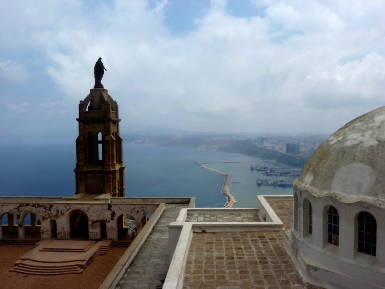
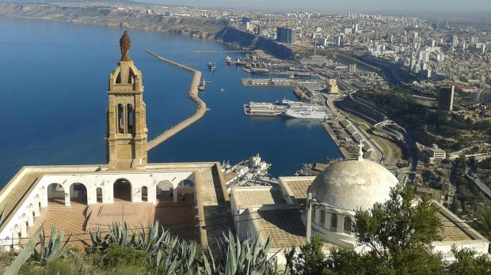
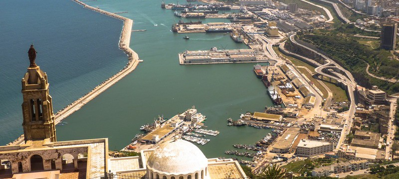

Oran is the second city of Algeria, it is a lively port city with heaps of character and beauty. Oran is an attraction in its own right and has historical buildings a plenty to explore including beautiful mosques, the Casbah and Le Theatre

The range of beautiful architecture is possibly the best of any city in Algeria. Oran is also a great place for scuba diving, sampling Algerian cuisine and listening to lively Rai music which has its origins in the city. Despite many positive reasons to visit the city there are also many signs of the country’s political troubles in the 90s are visible in Oran. The city filled novelist Albert Camus with so much dread that he based his novel ‘The Plague’ here.
